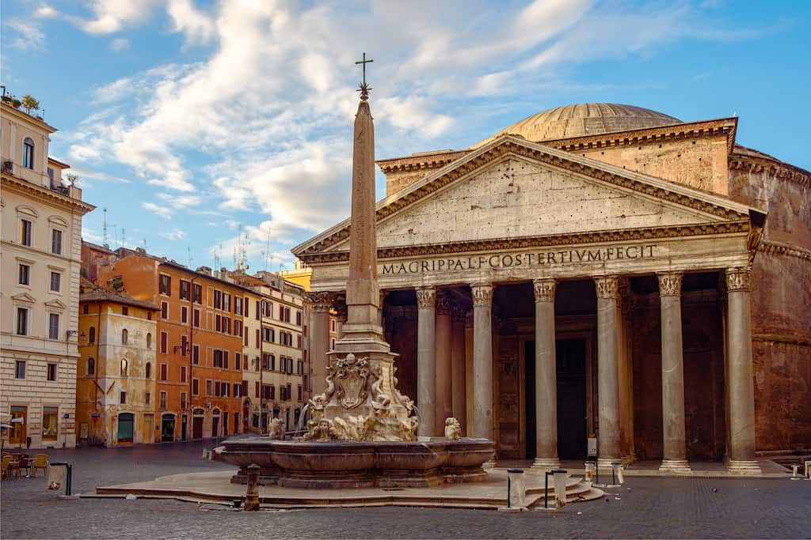
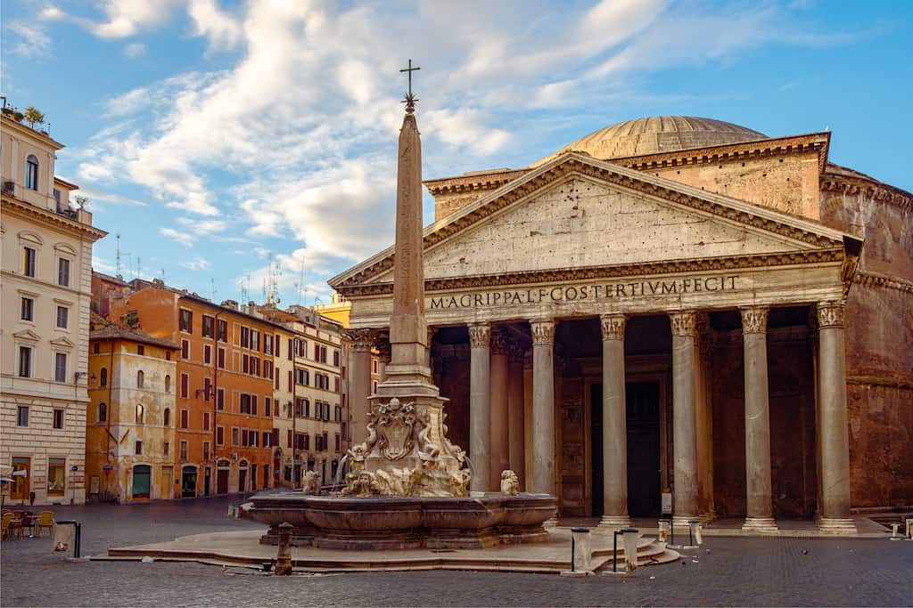
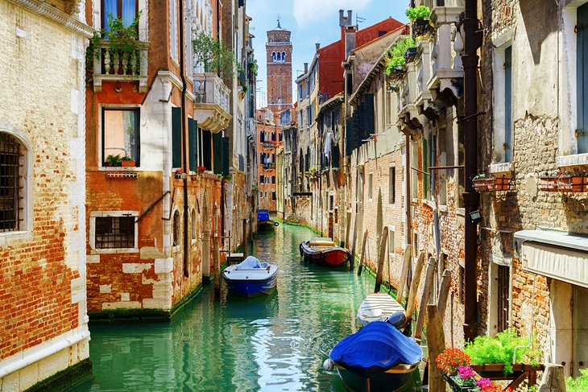
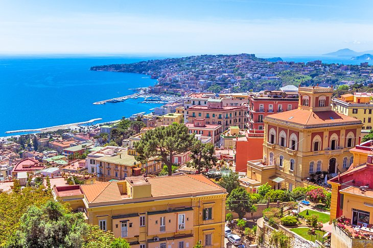
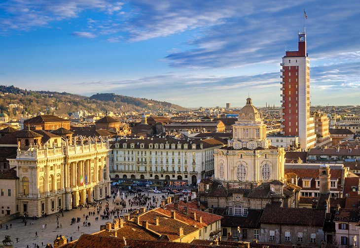

ABOUT ROME, ITALY
Rome, historic city and capital of Roma provincia (province), of Lazio regione (region), and of the country of Italy. Rome is located in the central portion of the Italian peninsula, on the Tiber River about 15 miles (24 km) inland from the Tyrrhenian Sea. Once the capital of an ancient republic and empire whose armies and polity defined the Western world in antiquity and left seemingly indelible imprints thereafter, the spiritual and physical seat of the Roman Catholic Church, and the site of major pinnacles of artistic and intellectual achievement, Rome is the Eternal City, remaining today a political capital, a religious centre, and a memorial to the creative imagination of the past.
GETTING TO ROME, ITALY
If you are flying to Rome, you should know there are two airports in Rome: Fiumicino (Leonardo da Vinci) and Ciampino. Fiumicino airport is the main Rome international airport. Ciampino used to be a military airport, and in recent years it has become a hub for many of the low-cost airlines that fly to Rome.
OTHER PLACES TO VISIT
Venice
Who could fail to love a city whose streets are made
of water, whose buses are boats, and where the songs of
gondoliers linger in the air? It is a magic city, and its
major attraction to tourists is the city itself. The hub
of the city is the broad Piazza San Marco, St. Mark's Square,
surrounded by several of its top tourist attractions.
The great Basilica of St. Mark stands beside the Doge's
Palace, and overlooking both is the tall Campanile.
Gondolas congregate at the end of the plaza in the Grand
Canal, and in the other direction, a gate under the clock
tower leads into a warren of narrow, winding passageways,
where you're sure to get lost on the way to Rialto Bridge.
But getting lost is one of the greatest pleasures of Venice,
where a postcard scene awaits around each corner.

Naples
As the canals characterize Venice, and the Renaissance is the essence of Florence, in Naples, it's the sheer exuberance that will hold you spellbound. It's a boisterous place, its narrow streets filled with color, noise, and life. You'll find plenty to see and do and experience here, in its treasure-filled churches, its magnificent palaces lavished in the riches of European royalty, and its premier archaeological museum displaying the finds from nearby Pompeii.
